![Malaysia Yo-Yo Association logo]()
Home of Malaysia’s
Yo-Yo Community
competitions, coaching, events, meetups & all about yo-yo.
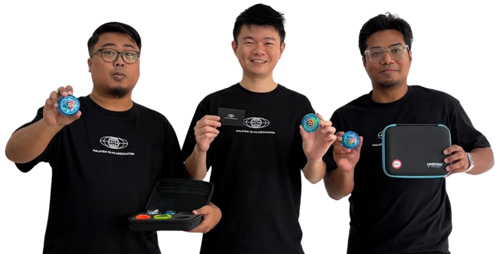
A Community That Spins Together.
We're bringing Malaysia's yo-yo players and enthusiasts together to share skills, express creativity, and grow the community.
Join UsJoin MYYA Community!
Join for free, or go Official for lifetime membership and grading.
Join Community For Free
Free forever
- Official MYYA Meetups & Hangouts
- Meet Professional Yo-Yo Players, Judge & Masters
- Get Updates on Upcoming Yo-Yo Events
- Learn & Create Yo-Yo Tricks with community
- Join Malaysia Yo-Yo WhatsApp & Facebook Group
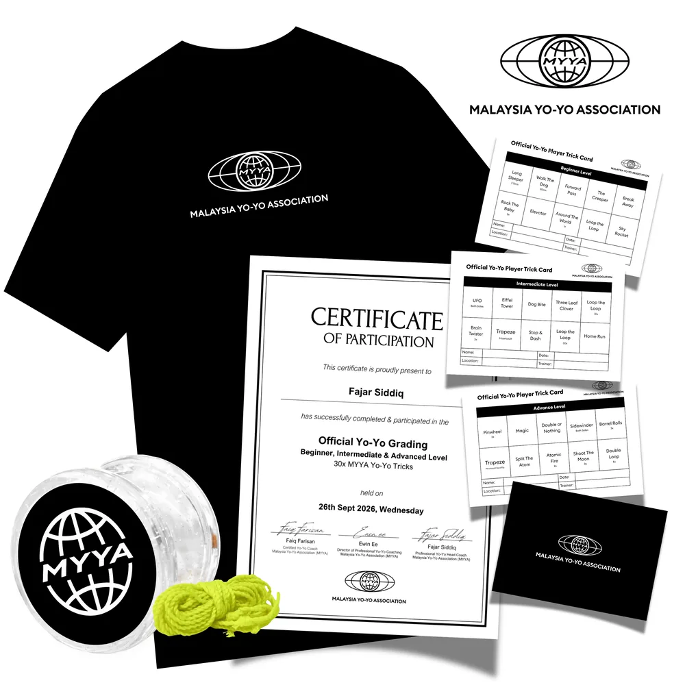
Malaysia Yo-Yo Championships
Join us at Atria Shopping Gallery on 31 October 2026 for an exciting yo-yo freestyle competition! Each participant will have 3 minutes to showcase their skills, creativity, and performance, judged according to IYYF standards.
Register Now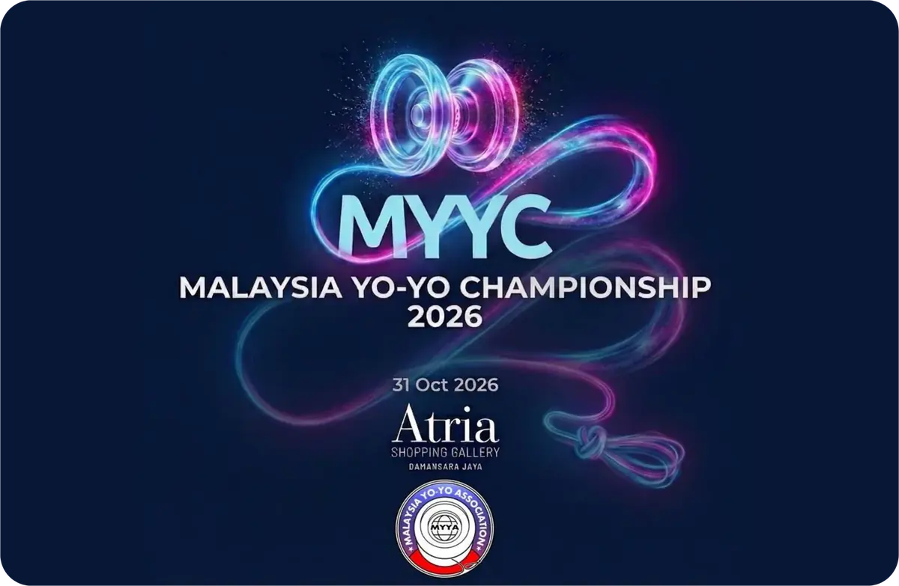
Yo-Yo Events
A running list of yo-yo contests, championships and fairs held across Malaysia, from national championships and regional contests to battles, cups and community events.
| Year | Event |
|---|---|
| 2026 | Malaysia Yo-Yo Championship |
| 2025 | Malaysia Yo-Yo Championship |
| 2025 | Kuala Lumpur Yo-Yo Championship (KLYC) |
| 2024 | Malaysia Yo-Yo Championship |
| 2023 | Malaysia Yo-Yo Championship |
| 2022 | Malaysia Yo-Yo Championship |
| 2021 | Malaysia Yo-Yo Championship — Not held due to COVID-19 |
| 2020 | Malaysia Yo-Yo Championship (Online) |
| 2020 | Central Regional Yo-Yo Contest |
| 2019 | GoPlay Toys & Games Fair Yo-Yo Contest |
| 2019 | Malaysia Yo-Yo Championship |
| 2019 | Central Regional Yo-Yo Contest |
| 2018 | Malaysia International Yo-Yo Open |
| 2018 | Malaysia Yo-Yo Championship |
| 2018 | Central Regional Yo-Yo Contest |
| 2016 | Central Regional Yo-Yo Contest |
| 2016 | One Malaysia Yo-Yo Contest (@ 1MYC) |
| 2016 | Berjaya Times Square Kuala Lumpur Yo-Yolution Championship |
| 2015 | Malaysia International Yo-Yo Open |
| 2015 | Hari Sukan Negara Selangor |
| 2015 | Central Regional Yo-Yo Contest |
| 2015 | Malaysia Yo-Yo Battle |
| 2015 | Yoyo Officer Yo-Yo Contest |
| 2015 | Festival Belia Putrajaya |
| 2015 | Malaysia Magicyoyo Championship |
| 2015 | YoYoRanger KL Tour |
| 2015 | Vosun Yo-Yo Contest |
| 2014 | Malaysia National Yo-Yo Contest (MNYC — Organized by 28spin) |
| 2014 | Malaysia Magicyoyo Championship |
| 2014 | Skeel Got Talent |
| 2014 | Malaysia Yo-Yo Battle |
| 2014 | Dement Yo-Yo Cup |
| 2014 | Battle of the String Yo-Yo Contest |
| 2014 | Kuala Lumpur Yo-Yo Challenge |
| 2013 | Malaysia National Yo-Yo Contest (MNYC — Organized by 28spin) |
| 2013 | Terengganu Regionals Yo-Yo Contest (TRYC — Organized by 28spin) |
| 2013 | Central Regional Yo-Yo Contest (CYRC — Organized by 28spin) |
| 2012 | Malaysia Yo-Yo Championship |
| 2011 | Malaysia Yo-Yo Championship |
| 2010 | Malaysia Yo-Yo Championship |
| 2009 | Malaysia Yo-Yo Championship |
| 2008 | Malaysia Yo-Yo Championship |
| 2007 | Malaysia Yo-Yo Championship |
| 2006 | Malaysia Yo-Yo Championship |
| 2005 | Malaysia Yo-Yo Championship (Inaugural official national MYYC) |
Join Trick Circle
Learning yo-yo tricks, challenge and performance.
Learn Yo-Yo
We offer Yo-Yo as a School Co-Curricular Activity (CCA), Private Coaching, Active Ageing Programme, After-School Enrichment Programme, Community Clubs, Yo-Yo Workshops and Performances, Corporate Team Building Workshops.
Start Learning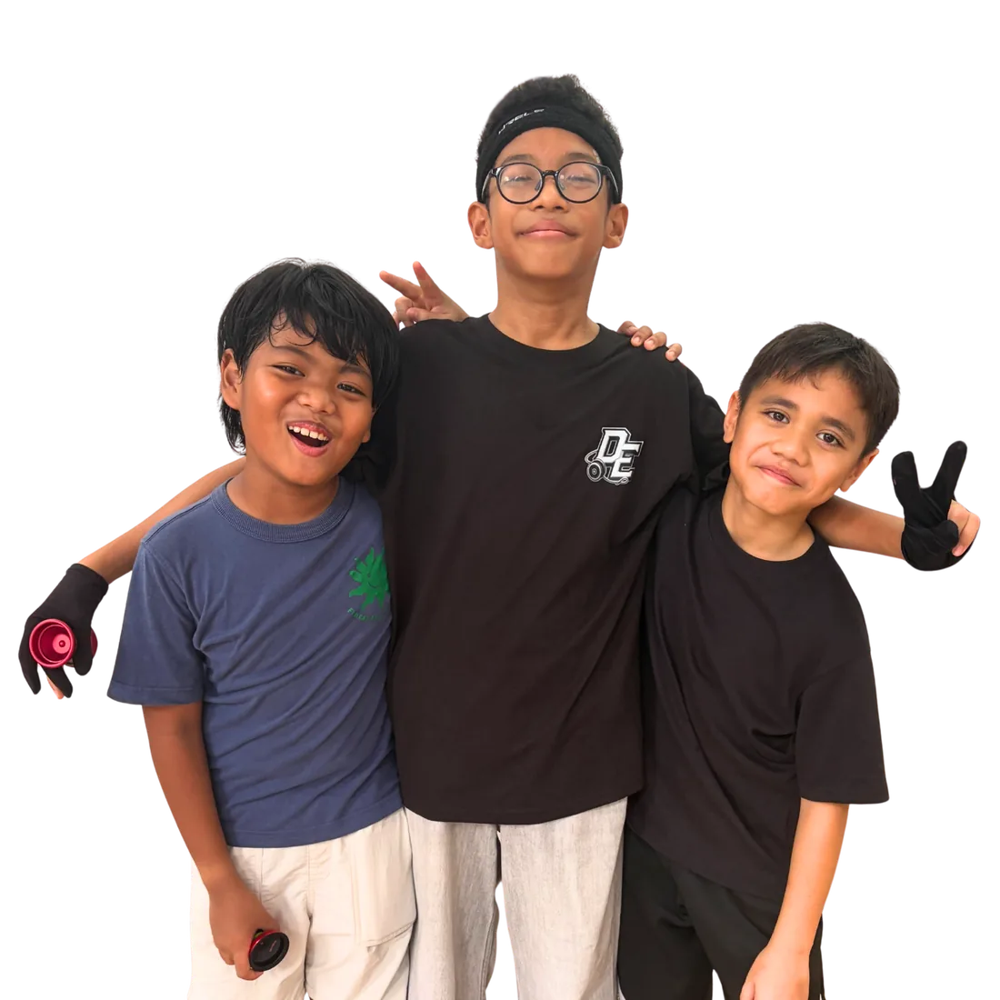
Yo-Yo Performance
Bring the wow factor to your next event with live performances by Malaysia's yo-yo champions. High-energy, crowd-pleasing shows tailored to your occasion, plus custom corporate gifts to make your brand unforgettable. Tell us about your event and get a quotation today.
Request For QuoteYo-Yo History
From the 1970s contests to today's community and competitions, discover how a simple toy grew into a thriving yo-yo scene in Malaysia.
- 1973 & 1976Jack Russell Campaign Era
- 1980Five Star Campaign Era
- 1999–2000ProYo Campaign Era
- 2003–2004Malaysian Yo-Yo Club Era
- 2005Modern & Competition Era
- 2007Super Yo-Yo, Auldey Blazing Teens Era
- 2010–2014Talent, Shops & Brands Era
- 2015Malaysia Yo-Yo Association Established
- 2026Present
Yo-Yo Museum
From 1970s classics to 2000s moderns — Malaysia Yo-Yo Museum
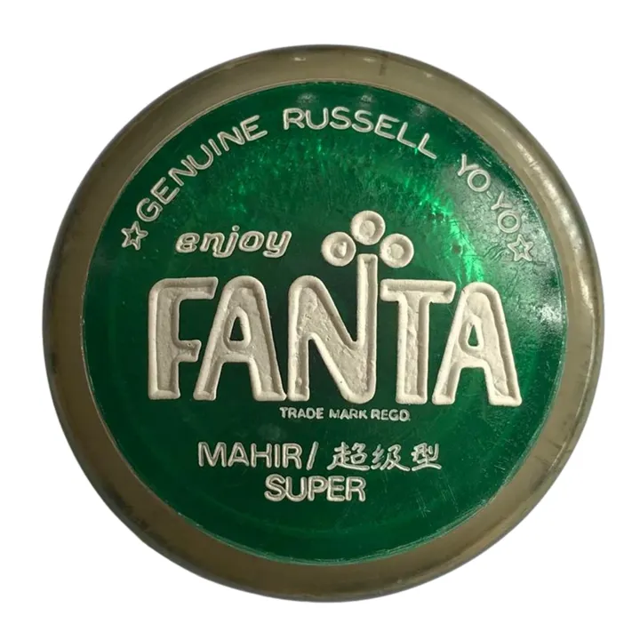
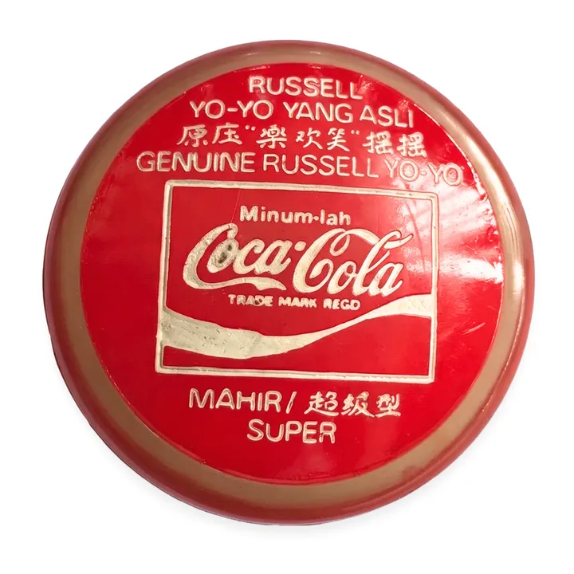
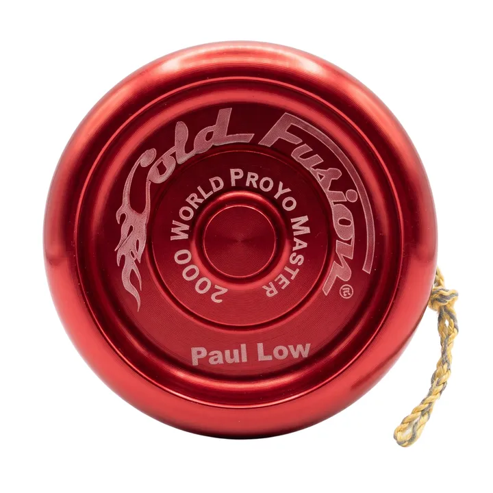
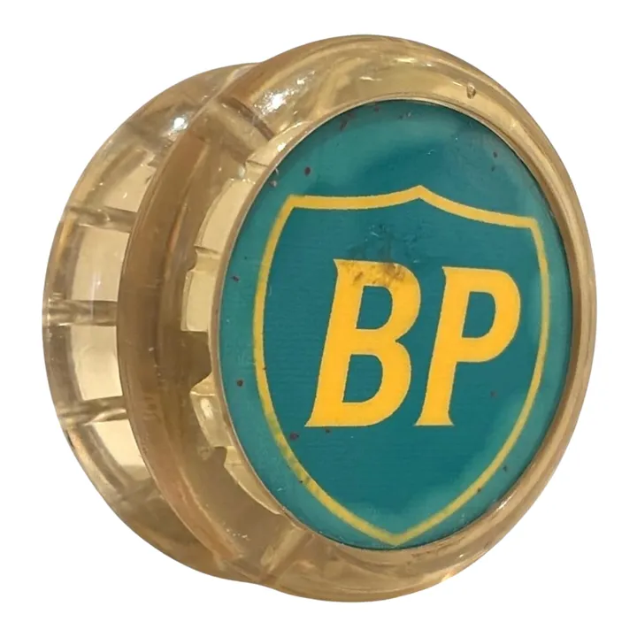
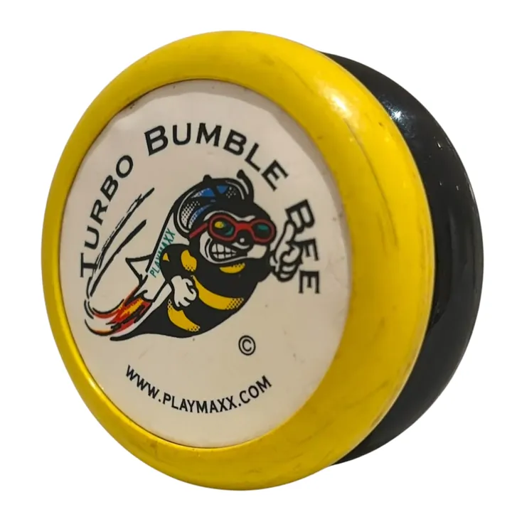
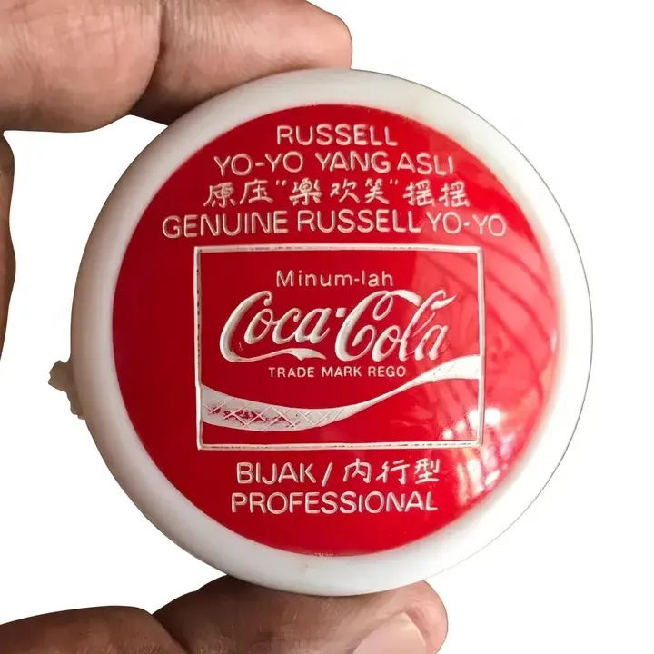
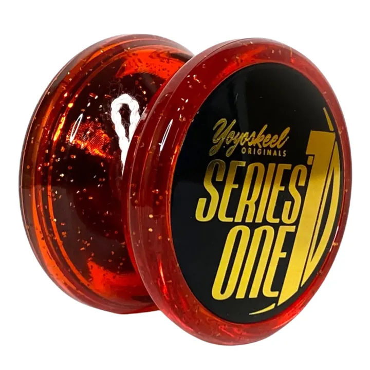
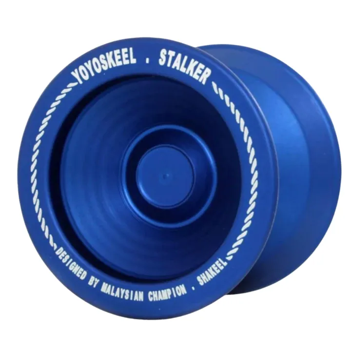
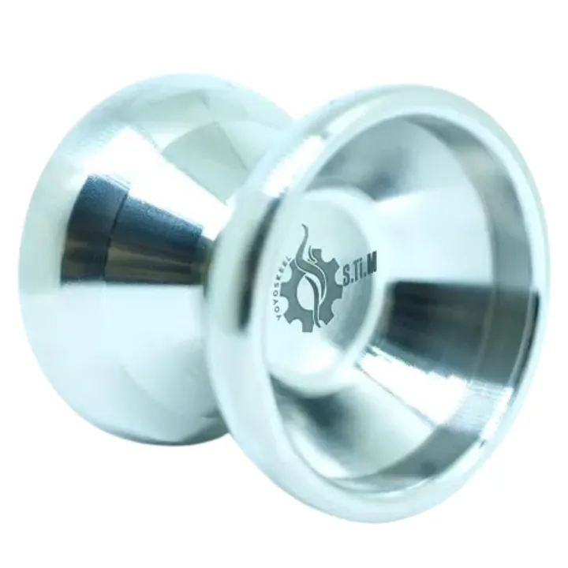
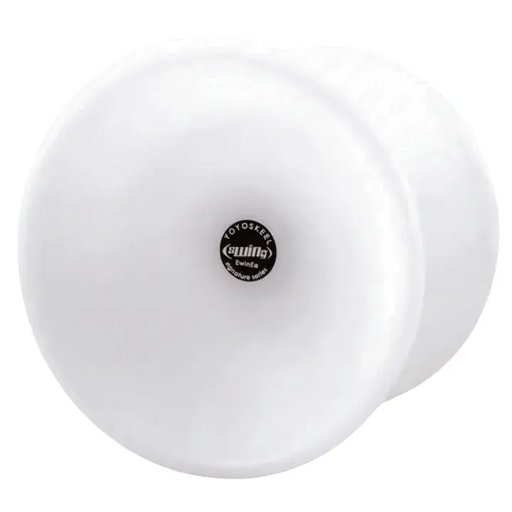
Yo-Yo Records
Malaysia's yo-yo and diabolo communities have made history together. Explore record-setting gatherings and national milestones recognised by the Malaysia Book of Records, celebrating the players, schools and organisers who made them happen.
Yo-Yo Meet-Ups
Connect with fellow yo-yo enthusiasts, share new tricks, and enjoy the fun of throwing together. Whether you’re a beginner or a seasoned player, meet-ups are the perfect place to make friends, exchange skills, and keep the Malaysian yo-yo community spinning.
Let’s HangoutYo-Yo Clubs
From sharing new tricks and freestyle showcases to preparing for the World Yo-Yo Championships, Asia-Pacific Yo-Yo Championships other International Yo-Yo Contest, yo-yo clubs bring players together to practise, learn, and push their limits. Build friendships, sharpen your skills, and help shape the next generation of Malaysian yo-yo champions.
Get TogetherYo-Yo Shop
Discover local yo-yo brands, trusted international brands, equipment, and accessories for every yo-yo player. From affordable beginner yo-yos to professional competition gear, explore and support homegrown Malaysian brands, and meet the people driving Malaysia’s yo-yo scene forward.
Buy NowSkill Toys
Hobbies you can master, one trick at a time
Diabolo
Known as the Chinese yo-yo, diabolo is spun and tossed on a string held between two sticks. Explore the associations, performance troupes, gear academies and school teams that keep diabolo thriving in Malaysia.
| Organisation / Team | About |
|---|---|
| 🏛️ Governing Bodies & Regional Associations | |
| World Diabolo Contest | The premier global championship for diabolo. |
| Diabolo Malaysia Open Competition | Open diabolo competition in Malaysia, with updates on Facebook. |
| MDA (Malaysia Diabolo Culture Association / 马来西亚扯铃文化协会) | National body for tournament formats and the War-D Malaysia Diabolo Tournament. |
| International Diabolo Union (IDU) - Malaysia Branch | Runs rulesets, technical exams and IDU Grading Days. |
| Johor Diabolo Culture Association (柔佛州扯铃文化协会) | Johor state body behind big tournaments and youth bootcamps. |
| Penang Diabolo Association (槟城扯铃协会) | Northern board driving competitions and heritage showcases. |
| Sabah Diabolo Association (沙巴扯铃协会) | East Malaysian body developing state-level competitions. |
| 🎭 Professional Performance Troupes & Studios | |
| MyDiabolo Team | Elite touring performance wing of the MyDiabolo brand. |
| DiAbolution Production | A theatrical production group established in 2018 by Ryn Mah, exclusively focused on blending high-difficulty tricks into long-form artistic theatrical shows, including The Evolution. |
| DFD Creations | Corporate entertainment agency known for LED diabolo acts. |
| Zone D Studio | An independent hub based in Klang, Selangor, providing custom training spaces and technical training tracks across the Klang Valley. |
| Diabolo Spiritual Art & Education Centre (扯铃心艺教学与发展中心) | Teaches school camps and freestyle routine building. |
| 🎒 Top Commercial Gear & Training Academies | |
| MyDiabolo Academy | Flagship training brand with its own pro diabolos, like the Vulcan. |
| Sundia Malaysia (BalloonTreez) | The primary distribution partner supplying the iconic Taiwanese Sundia equipment lines that sponsor major technical platforms like the MDA tournaments. |
| 🏫 Famous University & School Alumni Teams | |
| Diabolo is a graded co-curricular sport, so these schools and universities field top teams: | |
| Penang MinYi Diabolo Team | George Town crew known for rhythmic, modern staging. |
| Pusze Diabolo Team | Top alumni team that regularly dominates multi-state events. |
| TAR UMT Diabolo Club | Student club behind the international OTP Tournament. |
| Xiamen University Malaysia (XMUM) Diabolo Club | University team competing in open and state-level events. |
| Chong Hwa Diabolo Teams | Runs the Chong Hwa Diabolo Cup; includes Kluang Chong Hwa High School. |
| Kuen Cheng High School Diabolo Club | KL school team that often places at national youth podiums. |
| Klang Valley Elite High School Teams | Includes Tshing Nian, Hin Hua, Tsun Jin and Confucian schools. |
| Foon Yew High School Diabolo Teams | Large performing units across Johor Bahru, Kulai and Seri Alam. |
| Poi Lam High School Diabolo Team | Historically dominant school team from Ipoh, Perak. |
Kendama
Kendama is a traditional Japanese skill toy made of a handle (ken) and a ball (tama) joined by a string. Players swing the ball to catch it in the cups or land it on the spike, building up to flowing combos and tricks. In Malaysia, a growing community of players, collectors and makers share tricks, host meet-ups and take part in festivals and competitions.
| Organisation / Team | About |
|---|---|
| 🌎 Regional & International Associations | |
| Kendama World Cup (KWC) | International kendama competition. |
| Global Kendamas Network (GLOKEN) | Global network connecting kendama communities. |
| Associations & Communities | |
| Malaysia Kendama Association (MKA) | Official body behind the Malaysia Kendama Festival and Competition. |
| Kendama Community Malaysia | Facebook group for trick videos, tutorials, meetups and trading. |
| Kendama Culture | Creative collective promoting modern kendama flow and tricks. |
| Brands & Local Shops | |
| Spike Kendama | Locally assembled beech wood kendamas, around RM 70–80. |
| Kedaiyoyo | Leading skill-toy retailer and distributor of Cereal, KROM and Ozora. |
| xHandz Kendamas | Shopee retailer of beginner-friendly “Extreme Hand-Sports” gear. |
Spintop
Spinning tops, known as “Gasing” in Bahasa Melayu are toys designed to rotate on a tip, powered by hand-twirling, string launching, or throwing. Available in traditional wooden or metal designs, fixed-tip and ball-bearing models, and modern precision-engineered versions, they offer everything from classic spinning fun to advanced tricks, acrobatic performances, and long-lasting spins.
| Topic / Brand | Description / Models |
|---|---|
| ITSA | International Top Spinners Association |
| World Spintop Contest | World Spintop Contest |
| 🇯🇵 Koma (コマ) - Traditional Japanese Spintop | |
| SpinGear | SpinGear KOMA; Big Wing, OHRURI |
| Takara Tomy | Beyblade X |
| Nissan Chuzojo | Traditional Cast-Iron Beigoma |
| Top Craft | Custom Metal Battle Tops |
| +d | Sp!n |
| Mokkougei Sasahara | Minimalist Wooden Koma |
| Kumamoto-Koma | Educational Wooden Koma |
| 🏛️ Governing Associations & Federations | |
| PEGAMA (Persatuan Gasing Pangkah Malaysia / Malaysia Traditional Top-Spinning Association) | National body hosting Gasing Pangkah (striking) tournaments. |
| Kelantan Gasing Uri Association | State body for Gasing Uri, where 4–5 kg tops can spin for up to 2 hours 45 minutes (record). |
| 🪵 Traditional Master Crafting Teams & Venues | |
| Kampung Tenang Gasing Arena (Johor) | Traditional gasing arena led by Zul Gasing. |
| Kota Jembal Craftsmen (Kelantan) | Traditional makers of balanced, iron-weighted Gasing Uri tops. |
| ⚙️ Ball Bearing Tip Models | |
| The tip rotates independently from the body, enabling prolonged spin times and technical string interactions such as gyro flops. | |
| YoYoFactory | Elec-Trick; Elec-Trick LED |
| Duncan Toys | Bearing King |
| Trompos Space | Saturno Xtreme Roller; Jupiter Roller; Pegasus Roller |
| Strummol8 | Giulia; Augusta; Rosalinda; Dionisia |
| Spintastics | Blizzard Twin Ball Bearing |
| Strumalates | Julia |
| 🔒 Fixed Tip Models | |
| The point is fixed to the body and spins with it, supporting traditional fixed-tip tricks, regeneration launches, and standard ground spins. | |
| YoYoFactory | Short Circuit |
| Duncan Toys | Imperial Spin Top |
| Trompos Space | Saturno Fixed Metal Tip; Saturno Jr. (fixed plastic tip); Jupiter Fixed Metal Tip |
| Spintastics | Sidewinder; Trompo Grande |
| Strummol8 | Alice |
Juggling
Juggling is the art of keeping objects such as balls, clubs, rings and fire props in continuous motion through the air. From casual practice circles to polished stage and circus acts, Malaysia’s jugglers share skills online, perform at events and often cross over with diabolo and other skill toys. Discover the communities, performers and suppliers behind the scene.
| Organisation / Team | About |
|---|---|
| 🌎 Regional & International Associations | |
| International Jugglers’ Association (IJA) | Global body that features Malaysian jugglers; no national association yet. |
| 👥 Juggling Groups & Communities | |
| Malaysia Juggling Club | Online hub connecting local jugglers and sharing achievements. |
| Jugglers in KL Facebook Group | Active group for practice meet-ups, videos and tutorials. |
| 🎪 Performance Teams & Entertainment Agencies | |
| Malaysian Circus Show | Booking agency for circus artists, juggling and object manipulation. |
| Gigsmore Sdn Bhd | Event platform booking pro juggling teams and comedy duo shows. |
| Top Events / Colorz Event | Provides jugglers with balls, clubs, hoops and fire for KL and Selangor events. |
| 🛍️ Equipment Brands & Marketplace Sellers | |
| Ioensy | Online brand selling entry-level juggling club sets. |
Local Yo-Yo Brands
Support homegrown Malaysian yo-yo makers and discover the brands.
Alternatives
ALT (“alternatives”) is a Malaysian-founded, competition-grade yo-yo brand established by Ho Swee Jim. Known for its precision engineering, ALT is backed by a team of national and Asia-Pacific champions who put its designs to the test on the competition stage. Beyond making yo-yos, the brand also nurtures emerging talent into competitive champions, helping the next generation of Malaysian players grow. Its models include the Insomnia 7068, Inertia, Lacrima, and Key. Visit the website to explore the lineup and see what the brand is up to. Every release reflects the same commitment to detail, from the first design to the final throw. For competitors, that means dependable performance when it matters most. ALT proves that great yo-yos and great players grow best together. Quality you can feel in every spin. For players across Malaysia and the region, the brand stands as a symbol of local craftsmanship and ambition. It shows how a passion for design, careful engineering and support for the community can come together to shape the future of the sport.
View on Instagram28Spin
28Spin was founded by two siblings, Raymond Thian and Mimi Thian. It is a Malaysia-based competition and collector yo-yo store, curated around one idea: The Throws That Win. Every model they carry has been chosen, not just stocked. Each one is a signature throw proven by the champions who compete with them, so players know they are getting yo-yos with a real track record. Whether you are a competitor looking for your next throw or a collector hunting for something special, it is a store built around quality over quantity. Visit the website to browse the full collection. In a market full of choices, that focus makes it easy to shop with confidence. Every throw on the shelf has earned its place, so you can spend less time second-guessing and more time practicing, performing and competing. For newcomers and veterans alike, it is a welcoming place to learn what makes a great yo-yo, and a reminder that the best gear is simply the gear that helps you improve. Behind every pick is a love for the sport and the players who keep it moving.
View on InstagramKedaiyoyo
Kedaiyoyo is Malaysia's largest online and physical yo-yo store, founded by 8x Malaysia yo-yo champion Ewin Ee. It is also an Official Storefront on Shopee Malaysia, making it easy to order from anywhere in the country. The range covers yo-yos for all skill levels, international heavyweights, premium & competition labels, and regional & local favorites, alongside alternative skill toys, parts & accessories, and lifestyle & miscellaneous items. Whether you are picking up your very first yo-yo or upgrading your setup, it is a one-stop shop for the community. Visit the website to start shopping. With a physical store and an online shop working side by side, the community can browse and shop in whichever way suits them. It is a place where beginners find their feet and seasoned players find their next favorite. Backed by the experience of a champion, the store understands what players need at every stage, from choosing a first yo-yo to finding the right parts and accessories. It is a dependable home for the community, serving players across Malaysia.
View on InstagramYoyoskeel
Yoyoskeel is Malaysia's first and leading local yo-yo brand, founded in 2010 by 7x Malaysia national yo-yo champion Muhammad Shakeel Mohd Rose. The company focuses on skill toys and high-performance, competition-grade yo-yos designed by players, for players. Being created by a champion means the designs are shaped by real experience of what it takes to compete. Its models include Starting Point, Strive, Sleek, Splendid & S.Ti.M. Follow the brand on Instagram for the latest updates and releases. As a pioneer of the local scene, the brand shows that Malaysian-made yo-yos can stand proudly among the best. From the first throw to the podium, there is a model built to match your ambition, and a community of players ready to cheer you on. Every release carries a champion's standard of quality. Having grown alongside the local community since 2010, it has helped show what is possible for local makers. Its story is a reminder that a homegrown brand, built with passion and persistence, can leave a lasting mark on the scene.
View on InstagramYoyoRanger
YoyoRanger is a Malaysian yo-yo brand co-founded by Stanley Low Jia Cheng as Director/Owner and Roy Teo, who served as Head Judge of the Asia-Pacific Yo-Yo Championships from 2003 to 2025. Specializing in premium competition-grade yo-yos at affordable prices, the brand is backed by Stanley’s commitment to grassroots community building through TRYO Club in Terengganu, regional competitions and the Malaysia Yo-Yo Championship. In 2018, the Malaysian team won the Artistic Team Performance category at the World Yo-Yo Contest in Shanghai, combining high-level yo-yo play with traditional Chinese drumming. Notable models include the Libra, Rex 2.0, The Mafia, HERTz, Prime Force. It is a brand that proves serious performance does not have to come with a serious price, while keeping the community at the heart of everything it does. Its work off the stage matters just as much as its products, from supporting grassroots clubs to regional competitions. For players who want quality gear and a strong community behind it, YoyoRanger is a name worth knowing.
View on InstagramSingwon Yoyo
Singwon Yoyo is the first professional yo-yo brand from Sabah, East Malaysia (Borneo). It was founded by Timothy Wong Sing Won, a yo-yo enthusiast and retailer, and officially launched on April 23, 2016, during the Sabah Open YoYo Championship. Its models include South Peak, Brooke, Odora & Patriot JP, a bi-metal high-performance yo-yo released in collaboration with 3x Malaysia YoYo Champion Hassan Marialis. As a homegrown brand from Borneo, it is a proud addition to the Malaysian yo-yo scene. Follow the brand on Instagram to see its latest news. Launched on the stage of a championship, the brand was born in the middle of the community it serves. It shows that great ideas can come from anywhere, including the heart of Borneo, and every new release is another step in putting East Malaysia firmly on the yo-yo map. For players in Sabah and across East Malaysia, it offers a local name to be proud of and a reminder that the scene grows when makers, players and organisers support one another. Its journey is still being written, one throw at a time.
View on InstagramRevyo
Team RevYo, short for Revolution Yoer, is a professional yo-yo club based in Kota Kinabalu, the capital of Sabah in East Malaysia (Borneo). Founded on May 3, 2013, by Paul Peter and Micku Michelle @ Hochi, the team carries the motto “Passion. Skill.” on its logo, a nod to the dedication and technique that competitive yo-yo demands. Its name, Revolution Yoer, captures the spirit of a club that aims to move yo-yo forward in Sabah. RevYo is also active in the wider scene as an organizer of regional competitions, including the Sabah Open YoYo Championship (SOYC) 2019, held with MYYA. The team announced with a heavy heart that SOYC 2020 had to be cancelled due to the uncertainty of the recent COVID-19 outbreak, and MYYC 2020 was then held online. Follow the team on Instagram for updates, event news and highlights. Whether you are a beginner picking up your first yo-yo or a seasoned competitor, the team is a reminder that the scene in East Malaysia is active, welcoming and full of passion. Together, its members keep the community connected.
View on InstagramYo Blitz
Founded in 2007 by Ryan Han in Kuching, Sarawak, East Malaysia (Borneo), Yo Blitz is a Yo-Yo Education & Performance Brand dedicated to inspiring the next generation through interactive workshops, live performances and skill development. By bringing the art of yo-yo into schools, learning centres and community events, Yo Blitz combines entertainment with learning, helping children develop creativity, focus, coordination, patience and confidence. Beyond education and performance, Ryan Han also created Motordrill-Z Yo-Yo Strings, contributing to the yo-yo community through his own specialised string brand. Every workshop and show turns a simple toy into a lesson in perseverance, and every smile in the audience is proof that yo-yo is for everyone. It keeps the spirit of play alive while building skills that last. For parents, teachers and organisers, it offers a fun way to introduce children to a skill they can enjoy for years. Many young players take their first steps in yo-yo through programmes like these, and that is where a lifelong passion can begin.
View on FacebookWyvern Strings
Wyvern Strings was established in June 2014 by Adam Hamzah from Malaysia. Wyvern Strings produces 100% polyester strings, and each string is purely hand turned. Made for slacks, suicide tricks and fast play, the strings are long lasting and do not create too much excess fibre, which can cut into the spin time of the yo-yo. Strings that last longer mean less time restringing and more time playing. They have a slick feel that minimises friction with the hand, minimal sweat absorption from the palm, and just the right weight for slacks and suicide tricks. Vibrant colours make the string easier to spot during play. The main goal for Adam is to make Wyvern Strings known worldwide and used globally by yo-yo players, without compromising on the quality of the strings. For players who spend long hours practising slacks and suicide tricks, small details like string feel, weight and durability make a real difference. Wyvern Strings is built around those details, and it shows that even the smallest part of a yo-yo setup deserves care.
View on InstagramVahana Strings
Vahana Strings is a handmade yo-yo string brand in Sabah, Malaysia, and all of its strings are 100% polyester. Introducing the all new Vahana Strings, locally made in Kota Kinabalu, Sabah. Founded by Fairuddin Amiruddin, this new string company is making good progress in East Malaysia. Each pack contains 15 strings with a length of 125cm, in a 100% polyester blend, and every string is handmade to perfection. The strings are a very durable chubby type, giving a good, tight bind and therefore a better spin for the following throw. They are also smooth and do not snag easily. Strong, smooth and tight-binding, they are made to keep up with everyday play. It is time to show your support for the local company. Try one today. Strings may be small, but they are one of the most important parts of every throw, shaping how the yo-yo binds, spins and returns. By supporting a local string maker, players help keep the East Malaysian scene growing and give homegrown ideas a chance to shine. Every pack sold helps a homegrown idea go further.
View on InstagramK-Toys
Alif Izwan is the founder of K-Toys Online Shop and Hero Team, a 4x Malaysian National 5A/Freehand Champion and Malaysia Book of Records holder for the Longest Forward Pass Yo-Yo Trick. A competitive athlete, community leader, and creative entrepreneur, he pioneered the distinctive “Double-Dice” trick style. He organises Yo-Yo Talk Shows, Yo-Yo Workshops & sells bundle toys imported from USA, UK, Japan & Malaysia. Representing Malaysia on the global stage as a sponsored Duncan Crew Malaysia player, Alif reached the finals and placed 13th in the 5A division at the 2013 World Yo-Yo Contest. Recognized as a Superyoyo Master, he toured Malaysian schools and shopping malls, conducting live demonstrations and workshops that inspired a new generation of yo-yo players. Hero Team continues to deliver high-energy yo-yo performances, choreographed showcases, and pop-up workshops in collaboration with toy collectors, event organizers, and entertainment brands.
View on FacebookGCC
Hassan Marialis is a celebrated figure in the Malaysian yo-yo scene, widely regarded as one of the most creative and innovative players. 5x National Champion, his competitive career began in earnest in 2008, and he became a pioneer of the 3A style (two unresponsive yo-yos) in Malaysia, being the first to win that category at the Malaysia Yo-Yo Championship. Beyond his 16th-place finish at the World Yo-Yo Contest in Japan. Today, he continues to support the community through his specialty store, Gaming Culture & Collectibles (GCC), in Klang and remains a prominent brand ambassador for Malaysian yo-yoing. From the competition floor to the shop counter, his passion has never slowed down. For many players in Malaysia, the name is a reminder that creativity, persistence and a love for the game can take you a long way. Follow the store on Instagram to see what is new, and get to know a champion who is still dedicated to the sport. For the community, it is a friendly place to talk yo-yo, share ideas and be inspired by someone with years of experience.
View on InstagramDement
Dement Clothing by Euphorya was founded in 2005 by Singaporean yo-yo champion Fajar Siddiq, now based in Malaysia as a digital nomad. His yo-yo journey began in 1998 during the Hyper Russell Yo-Yo, Henrys and THP era. A regional contest champion, he won his first Malaysian yo-yo competition at Toyzbar in 2000 and represented Duncan Toys professionally from 2002 to 2014. He placed 2nd in the X-Division (Offstring) at the 2003 Asia Pacific Yo-Yo Championships and 32nd in the 4A Division preliminaries at the 2015 World Yo-Yo Contest. A pioneer of Singapore’s off-string 4A and freehand 5A division, Fajar continues to mentor players, judge competitions, perform, and design official gear and branding for the Malaysia Yo-Yo Association (MYYA). His projects include Throw Clothing and the Dement Yo-Yo Cup in Kuala Lumpur. Born & raised in Yishun, Singapore, Dement carries his “Made in Yishun” spirit and “Fight for Passion!” slogan, bringing together a community of over 100 people across Southeast Asia through yo-yoing, spintop, diabolo, jitter ring, kendama, running, streetwear modelling, action and extreme sports.
View on InstagramYo-Yo Coaching & Grading
Certification Framework
Proposed training standards for MYYA.
| Level | Coaching title | Required hours | Qualification criteria | Certificate ID |
|---|---|---|---|---|
| Level1 | Coaching titleAssistant Yo-Yo Coach | Required hours8 hours | Qualification criteriaTraining-based + practical assessment | Certificate IDMYYA-AYC-2026-001 |
| Level2 | Coaching titleCertified Yo-Yo Coach | Required hours20 hours cumulative | Qualification criteriaTraining-based + competency assessment | Certificate IDMYYA-CYC-2026-001 |
| Level3 | Coaching titleSenior Yo-Yo Coach | Required hours40 hours cumulative | Qualification criteriaExperience-based + advanced assessment | Certificate IDMYYA-SYC-2026-001 |
| Level4 | Coaching titleProfessional Yo-Yo Head Coach | Required hours60+ hours cumulative | Qualification criteriaAppointment-based + leadership assessment | Certificate IDMYYA-PYHC-2026-001 |
Certificate ID format: MYYA-[LEVEL]-[YEAR]-[NUMBER]
Four qualification criteria
Training-Based
Completion of the required training hours.
Competency-Based
Demonstration of yo-yo skills, teaching ability and safety.
Experience-Based
Verified coaching experience, practical teaching and community contributions.
Appointment-Based
Formal appointment and approval by MYYA.
Note: The training hours are suggested guidelines, not official MYYA requirements. Higher levels require relevant experience, assessments, and completion of the required training programme. The Professional Yo-Yo Head Coach title is awarded by MYYA through formal appointment, not automatically after 60 hours.
Official Yo-Yo Grading System
Beginner, Intermediate & Advanced Level
| Level | Certification title | Tricks | Training hours | Estimated duration | Certificate ID |
|---|---|---|---|---|---|
| Level1 | Certification titleBeginner Yo-Yo Grading | Tricks10 | Training hours10 hours | Estimated duration2–4 weeks | Certificate IDMYYA-BYG-2026-001 |
| Level2 | Certification titleIntermediate Yo-Yo Grading | Tricks10 | Training hours15 hours | Estimated duration1–2 months | Certificate IDMYYA-IYG-2026-001 |
| Level3 | Certification titleAdvanced Yo-Yo Grading | Tricks10 | Training hours20 hours | Estimated duration2–3 months | Certificate IDMYYA-AYG-2026-001 |
| LevelTotal | Certification titleOfficial Yo-Yo Grading | Tricks30 | Training hours45 hours | Estimated duration3–6 months | Certificate IDAll Combined |
Official 30x MYYA Yo-Yo Tricks
Beginner Level
Level 1 · 10 tricks
- Long Sleeper (3 secs)
- Walk The Dog (30cm)
- Forward Pass
- The Creeper
- Break Away
- Rock The Baby (3x)
- Elevator
- Around The World (1x)
- Loop The Loop
- Sky Rocket
Intermediate Level
Level 2 · 10 tricks
- UFO (Both Sides)
- Eiffel Tower
- Dog Bite
- Three Leaf Clover
- Loop The Loop (10x)
- Brain Twister (3x)
- Trapeze
- Stop & Dash
- Loop The Loop (30x)
- Home Run
Advanced Level
Level 3 · 10 tricks
- Pinwheel (3x)
- Magic
- Double or Nothing
- Sidewinder (Both Sides)
- Barrel Rolls (3x)
- Trapeze Moonsault Backflip
- Split The Atom
- Atomic Fire (2x)
- Shoot The Moon
- Double Loop 5x
The grading system consists of 30x yo-yo tricks across three levels: Beginner, Intermediate, and Advanced. It is designed for school Co-Curricular Activities (CCA) and official Malaysia Yo-Yo Association (MYYA) membership and grading.
MYYA School CCA Grading
Students are expected to complete the suggested training hours under an MYYA Coach and fulfil the applicable grading and assessment requirements.
MYYA Member & Grading
Members may learn independently or train with an MYYA Coach before completing the applicable grading and assessment requirements.
Note: Training hours are suggested guidelines, not official MYYA requirements
Yo-Yo Professionals
Meet the yo-yo judges, coaches & masters
Yo-Yo Judge
Judges who score competitions and uphold fair play at every MYYA event.
- Head JudgeAhmad Dhamiri
- Head JudgeEwin Ee
- Head JudgeStanley Low
- JudgeShakeel Rose
- JudgeAzrul Hafriz
- JudgeHo Swee Jim
- JudgeHassan Marialis
- JudgeFajar Siddiq
- JudgeRyan Lim
- JudgeFariq Ismeth
- JudgeJeremy Quah
- JudgeDavid Lau Loon Jie
- JudgeRyan Han
- JudgeWooi Ming
- JudgeAlif Izwan
Yo-Yo Coach
Coaches who teach, mentor and grow players from first throw to competition level.
- SchoolFajar Siddiq
- SchoolEwin Ee
- SchoolFaiq Farisan
- ClubRaymond Thian
- ClubRyan Han
- ClubNichy Chow
- ClubStanley Low
- ClubShakeel Rose
- ClubAlif Izwan
- ClubTimothy
- ClubKhai Boon
Yo-Yo Master
Masters recognised for their skill, experience and contribution to the community.
- Hall of FameRobert Low
- Hall of FameVernon Low
- Hall of FameNik Rauf Daud
- Hall of FameSelvanayagam S/O Kailasam
- Legend/PioneerAisamudin
- Legend/PioneerPaul Low
- Legend/PioneerAhmad Dhamiri
- Legend/PioneerAzrul Hafriz
- Legend/PioneerFajar Siddiq
- Legend/PioneerRaymond Thian
- Legend/PioneerEwin Ee
- Legend/PioneerShakeel Rose
- Legend/PioneerNichy Chow
- Legend/PioneerSoon Seng
- Legend/PioneerKyle Izwany
- PioneerJohn Sekar
- PioneerFaiz Sallahuddin
- Grand MasterAlif Izwan
- Grand MasterPetra Reza
- Grand MasterWooi Ming
- Grand MasterNazri Arshad
- Grand MasterKhai Boon
- MasterRyan Han
- MasterWong KJ
| Title | Who it recognises |
|---|---|
| Yo-Yo Master | Highly skilled, experienced and respected players |
| Yo-Yo Grandmaster | Masters with exceptional expertise and significant contributions |
| Yo-Yo Legend | Iconic figures who have shaped the yo-yo community |
| Yo-Yo Pioneer | People who pioneered a style, scene or movement |
| Yo-Yo Champion | National or international competition champions |
| Yo-Yo Hall of Fame | Individuals recognised for lifetime achievements |
Data Source: Verified public records from Wikipedia, Yoyo Wiki, Yoyo Archive, Kedaiyoyo, MYYA via AI Overview by Google
Yo-Yo Champions
Champions and podium finishers from Malaysian yo-yo contests.
| Year | Event | Division | 1st Place (🥇) | 2nd Place (🥈) | 3rd Place (🥉) |
|---|---|---|---|---|---|
| 1973 | Coca-Cola Yo-Yo Competitions (Kajang, Kuala Lumpur & Petaling Jaya) | Loop-the-Loop | Robert Low | Data Unavailable | Data Unavailable |
| 1975 | Russell Yo-Yo Promotion | Two-Handed Loop-the-Loop | Robert Low | Data Unavailable | Data Unavailable |
| 1976 | Malaysia National Russell Championship | Grand Finals (Looping) | Nik Rauf Daud | Data Unavailable | Data Unavailable |
| 1976 | Coca-Cola/Fanta KL Yo-Yo Contest | Grand Finals (Semi-Final) | Selvanayagam S/O Kailasam | Data Unavailable | Data Unavailable |
| 1999 | Playmaxx ProYo National Grand Finals | Classic Freestyle | Aisamudin | Paul Low | Robert Low |
| 2000 | ProYo Subang Parade Grand Finale | Classic Freestyle | Ilyas | Wan | Data Unavailable |
| 2000 | Toyzbar Yo-Yo Contest Jusco Maluri | Classic Freestyle | Fajar Siddiq | Data Unavailable | Data Unavailable |
| 2005 | Malaysia Yo-Yo Championship (MYYC) | 1A (Single String) | John Sekar | Hassan Marialis | Faiz Sallahuddin |
| 2005 | Malaysia Yo-Yo Championship (MYYC) | X Division | Raymond | Jonathan | Shakeel Rose |
| 2006 | Malaysia Yo-Yo Championship (MYYC) | 1A (Single String) | Faiz Sallahuddin | John Sekar | Wooi Ming |
| 2006 | Malaysia Yo-Yo Championship (MYYC) | 2A (Double Hand) | Kyle Izwany | Raymond | Nadiah |
| 2006 | Malaysia Yo-Yo Championship (MYYC) | 4A (Offstring) | Mirul | Ewin Ee | Raymond |
| 2006 | Malaysia Yo-Yo Championship (MYYC) | 5A (Counterweight) | Shakeel Rose | Jonathan | Azrul |
| 2006 | Malaysia Yo-Yo Championship (MYYC) | Artistic Performance | Team HERO (Melaka) | Team -MOJI- (KL) | Team WHATEVERLAH ! (KL) |
| 2007 | Malaysia Yo-Yo Championship (MYYC) | 1A (Single String) | Faiz Sallahuddin | Shakeel Rose | Hassan Marialis |
| 2007 | Malaysia Yo-Yo Championship (MYYC) | 2A (Double Hand) | Soon Seng | Ewin Ee | Jazli |
| 2007 | Malaysia Yo-Yo Championship (MYYC) | 4A (Offstring) | Raymond | Ewin Ee | Wong KJ |
| 2007 | Malaysia Yo-Yo Championship (MYYC) | 5A (Counterweight) | Shakeel Rose | Ewin Ee | Azrul |
| 2008 | Malaysia Yo-Yo Championship (MYYC) | 1A (Single String) | Hassan Marialis | Faiz Sallahuddin | Shakeel Rose |
| 2008 | Malaysia Yo-Yo Championship (MYYC) | 2A (Double Hand) | Kyle Izwany | Jazli | Ewin Ee |
| 2008 | Malaysia Yo-Yo Championship (MYYC) | 4A (Offstring) | Ewin Ee | Raymond | Jazli |
| 2008 | Malaysia Yo-Yo Championship (MYYC) | 5A (Counterweight) | Shakeel Rose | Jonathan | Ewin Ee |
| 2010 | Malaysia Yo-Yo Championship (MYYC) | 1A (Single String) | Azmi Asri | Shakeel Rose | Jazli Iqbal |
| 2010 | Malaysia Yo-Yo Championship (MYYC) | 2A (Double Hand) | Jazli Iqbal | Azrul Hafriz | Arif Hadi |
| 2010 | Malaysia Yo-Yo Championship (MYYC) | 4A (Offstring) | Ewin Ee | Jazli Iqbal | Shakeel Rose |
| 2010 | Malaysia Yo-Yo Championship (MYYC) | 5A (Counterweight) | Shakeel Rose | Azmi Asri | Ryan Han |
| 2011 | Malaysia Yo-Yo Championship (MYYC) | 1A (Single String) | Azmi Asri | Shakeel Rose | Jazli Iqbal |
| 2011 | Malaysia Yo-Yo Championship (MYYC) | 2A (Double Hand) | Arif Hadi | Jazli Iqbal | Ewin Ee |
| 2011 | Malaysia Yo-Yo Championship (MYYC) | 4A (Offstring) | Ewin Ee | Raymond Thian | Shakeel Rose |
| 2011 | Malaysia Yo-Yo Championship (MYYC) | 5A (Counterweight) | Shakeel Rose | Alif Izwan | Ewin Ee |
| 2012 | Malaysia Yo-Yo Championship (MYYC) | 1A (Single String) | Jazli Iqbal | Shakeel Rose | Hassan Marialis |
| 2012 | Malaysia Yo-Yo Championship (MYYC) | 2A (Double Hand) | Ewin Ee | Hassan Marialis | Arif Hadi |
| 2012 | Malaysia Yo-Yo Championship (MYYC) | 4A (Offstring) | Muhammad Muhsin | Ewin Ee | Wong KJ |
| 2012 | Malaysia Yo-Yo Championship (MYYC) | 5A (Counterweight) | Alif Izwan | Ahmad Dimi | Azrul Hafriz |
| 2012 | Malaysia Yo-Yo Championship (MYYC) | International Open | Darrell Mitchell | Sean Hung | Alex Yao |
| 2013 | Malaysia Yo-Yo Championship (MYYC) | 1A (Single String) | Shakeel Rose | Ho Swee Jim | Zafran Aqil |
| 2013 | Malaysia Yo-Yo Championship (MYYC) | 2A (Double Hand) | Ewin Ee | Azrul Hafriz | Alif Izwan |
| 2013 | Malaysia Yo-Yo Championship (MYYC) | 3A (Double String) | Hassan Marialis | Ewin Ee | Alif Izwan |
| 2013 | Malaysia Yo-Yo Championship (MYYC) | 4A (Offstring) | Ewin Ee | Raymond Thian | Ryan Han |
| 2013 | Malaysia Yo-Yo Championship (MYYC) | 5A (Counterweight) | Alif Izwan | Shakeel Rose | Ewin Ee |
| 2014 | Malaysia Yo-Yo Championship (MYYC) | 1A (Single String) | Zafran Aqil | Ho Swee Jim | Tariq Nor |
| 2014 | Malaysia Yo-Yo Championship (MYYC) | 2A (Double Hand) | Ewin Ee | Azrul Hafriz | Alif Izwan |
| 2014 | Malaysia Yo-Yo Championship (MYYC) | 3A (Double String) | Hassan Marialis | Ewin Ee | Alif Izwan |
| 2014 | Malaysia Yo-Yo Championship (MYYC) | 4A (Offstring) | Ewin Ee | Raymond Thian | Muhammad Muhsin |
| 2014 | Malaysia Yo-Yo Championship (MYYC) | 5A (Counterweight) | Alif Izwan | Ahmad Dimi | Rafeq Aziz |
| 2015 | Malaysia Yo-Yo Championship (MYYC) | 1A (Single String) | Zafran Aqil | Ho Swee Jim | Wazir Zahari |
| 2015 | Malaysia Yo-Yo Championship (MYYC) | 2A (Double Hand) | Azrul Hafriz | Ewin Ee | Alif Izwan |
| 2015 | Malaysia Yo-Yo Championship (MYYC) | 3A (Double String) | Adi Hisham Mohtar | Hassan Marialis | Lau Loong Jie |
| 2015 | Malaysia Yo-Yo Championship (MYYC) | 4A (Offstring) | Ewin Ee | Ryan Han | Jazli Iqbal |
| 2015 | Malaysia Yo-Yo Championship (MYYC) | 5A (Counterweight) | Ahmad Dhamiri Nur | Ahmad Alif Izwan | Ewin Ee |
| 2016 | Malaysia National Yo-Yo Contest | 1A (Single String) | Amirrul Rahman | Muhammad Shaifuddin | Ridzwan Ngataman |
| 2016 | Malaysia National Yo-Yo Contest | 2A (Double Hand) | Ewin Ee | Toh Zhen Jian | Asnu Minzian |
| 2016 | Malaysia National Yo-Yo Contest | 3A (Double String) | Lau Loong Jie | Adi Hisham Mohtar | Wayne Chew |
| 2016 | Malaysia National Yo-Yo Contest | 4A (Offstring) | Wesley Lim | Ewin Ee | Issac Bong |
| 2016 | Malaysia National Yo-Yo Contest | 5A (Counterweight) | Ahmad Dimi | Curtise Yeo | Ewin Ee |
| 2016 | Malaysia Yo-Yo Championship (MYYC) | Under 17 Junior | Wayne Chew | Low Jia Wei | Phiong Tung Liang |
| 2016 | Malaysia Yo-Yo Championship (MYYC) | Women Division | Tan Shuan Zhir | Sim Jo Jo | Phiong Suk Chien |
| 2016 | Malaysia Yo-Yo Championship (MYYC) | 3D Division | Ewin Ee | David Lau | Navien Al Krishna Kumar |
| 2017 | Malaysia National Yo-Yo Contest | 1A (Single String) | Julian Chee Yie Jian | Zafran Aqil | Wayne Chew |
| 2017 | Malaysia National Yo-Yo Contest | 3A (Double String) | David Lau | Adi Hisham Mohtar | Phiong Tung Liang |
| 2017 | Malaysia National Yo-Yo Contest | 4A (Offstring) | Wesley Lim | Joel Cham Hong Xin | Ryan Han |
| 2017 | Malaysia National Yo-Yo Contest | 5A (Counterweight) | Low Jia Cheng | Alif Izwan | Ahmad Dimi |
| 2017 | Malaysia National Yo-Yo Contest | Artistic Performance | Tr-yo | Alif Izwan | Ryan Han |
| 2017 | Malaysia National Yo-Yo Contest | X Division | Adi Hisham Mohtar | Cham Hong Xing | Bong Yee Sheng |
| 2017 | Malaysia Yo-Yo Championship (MYYC) | Champion of Champions Division | Joel Cham Hong Xin | Julian Chee Yie Jian | David Lau |
| 2018 | Malaysia Yo-Yo Championship (MYYC) | 1A (Single String) | Julian Chee | Wayne Chew | Zafran Aqil |
| 2018 | Malaysia Yo-Yo Championship (MYYC) | 2A (Double Hand) / 3A (Double String) | Hassan Marialis | Hans Aw | Alif Izwan |
| 2018 | Malaysia Yo-Yo Championship (MYYC) | 4A (Offstring) | Cham Hong Xin | Ilhan Gabriel | Yeoh ZiQi Leon |
| 2018 | Malaysia Yo-Yo Championship (MYYC) | 5A (Counterweight) | Alif Izwan | Rafeq Aziz | Ahmad Dimi |
| 2018 | Malaysia Yo-Yo Championship (MYYC) | Under 17 Junior | Chew Zi Hao | Liew Chin Wah | Ilhan Gabriel |
| 2018 | Malaysia Yo-Yo Championship (MYYC) | International 1A Open | Brandon Vu | Karthik Devaraj | John Yutong Zhang |
| 2018 | Malaysia Yo-Yo Championship (MYYC) | International Y Division | Hans Yim | Pornpinit Sanprasert | Nguyen Hoang Tri Hai |
| 2019 | Malaysia Yo-Yo Championship (MYYC) | 1A (Single String) | Chew Zi Hao | Zafran Aqil | Liew Chin Wah |
| 2019 | Malaysia Yo-Yo Championship (MYYC) | 2A (Double Hand) | Wee Sin Yu | Kyle Lui | Fariq Ismeth |
| 2019 | Malaysia Yo-Yo Championship (MYYC) | 3A (Double String) | Chai Siaw Jing | Chew Zi Hao | Aw Yee Han |
| 2019 | Malaysia Yo-Yo Championship (MYYC) | 4A (Offstring) | Ilhan Gabriel | Wesley Lim | Ryan Han |
| 2019 | Malaysia Yo-Yo Championship (MYYC) | 5A (Counterweight) | Loo Yong Leong | Keevan | Wulf Trigger |
| 2020 | Malaysia Yo-Yo Championship (MYYC) Online | 1A (Single String) | Julian | Hassan Marialis | Jeremy Kuyah |
| 2020 | Malaysia Yo-Yo Championship (MYYC) Online | X Division | Ilhan | Chai Siaw Jing | Ong Shi Xiong |
| 2021 | Malaysia Yo-Yo Championship (MYYC) – not held due to COVID-19 | COVID-19 | COVID-19 | COVID-19 | COVID-19 |
| 2022 | Malaysia Yo-Yo Championship (MYYC) | 1A (Single String) | Chew Zi Hao | Ho Swee Jim | Navien Al Krishna Kumar |
| 2022 | Malaysia Yo-Yo Championship (MYYC) | 2A (Double Hand) | Azrul Hafriz | Gary Tiong | Marcus Ho |
| 2022 | Malaysia Yo-Yo Championship (MYYC) | 3A (Double String) | Hassan Marialis | Azim Jameel | Pan Hao Yee |
| 2022 | Malaysia Yo-Yo Championship (MYYC) | 4A (Offstring) | Ilhan Gabriel | Hassan Marialis | Azim Jameel |
| 2022 | Malaysia Yo-Yo Championship (MYYC) | 5A (Counterweight) | Shakeel Rose | Alif Izwan | Azim Jameel |
| 2022 | Malaysia Yo-Yo Championship (MYYC) | International 1A Open | Brandon Vu | Pornpinit Sanprasert | Nakarin Thongboonuang |
| 2023 | Malaysia Yo-Yo Championship (MYYC) | 1A (Single String) | Marcus Ee | Ilhan Gabriel | Chew Zihao |
| 2023 | Malaysia Yo-Yo Championship (MYYC) | 2A (Double Hand) | Marcus Ho | Chai Siaw Jing | Azrul Hafriz |
| 2023 | Malaysia Yo-Yo Championship (MYYC) | 3A (Double String) | Chai Siaw Jing | Hassan Marialis | David Ling |
| 2023 | Malaysia Yo-Yo Championship (MYYC) | 4A (Offstring) | Ilhan Gabriel | Chai Siaw Jing | Muhammad Nabihan |
| 2023 | Malaysia Yo-Yo Championship (MYYC) | 5A (Counterweight) | Shakeel Rose | Rafeq Aziz | Azim Jameel |
| 2023 | Malaysia Yo-Yo Championship (MYYC) | Under 17 Junior | Caleb Tay | Jemima Tay | Chong Jin Xuan |
| 2024 | Malaysia Yo-Yo Championship (MYYC) | 1A (Single String) | Ilhan Gabriel | Marcus Ee | Ho Swee Jim |
| 2024 | Malaysia Yo-Yo Championship (MYYC) | X Division | Ilhan Gabriel | Chai Siaw Jing | Martin Tay |
| 2025 | Kuala Lumpur Yo-Yo Cup (KLYC) | 1A (Single String) | Ilhan Gabriel | Julian Chee | Ho Swee Jim |
| 2025 | Malaysia Yo-Yo Championship (MYYC) | 1A (Single String) | Ilhan Gabriel | Ho Swee Jim | Geon Hee Lee |
| 2025 | Malaysia Yo-Yo Championship (MYYC) | International 1A Open | Karthik Devaraj | Thewadon | Nut Budda |
| 2025 | Malaysia Yo-Yo Championship (MYYC) | 4A (Offstring) | Ilhan Gabriel | Fajar Siddiq | Martin Tay |
| 2025 | Malaysia Yo-Yo Championship (MYYC) | 2A (Double Hand) | David Ling | Chai Siaw Jing | Fajar Siddiq |
| 2025 | Malaysia Yo-Yo Championship (MYYC) | Under 17 Junior | Chong Jin Xuan | Jemima Tay Min | Caleb Tay Yi |
| 2026 | Malaysia Yo-Yo Championship (MYYC) | 1A (Single String) | - | - | - |
| 2026 | Malaysia Yo-Yo Championship (MYYC) | 2A (Double Hand) / 3A (Double String) | - | - | - |
| 2026 | Malaysia Yo-Yo Championship (MYYC) | 4A (Offstring) | - | - | - |
| 2026 | Malaysia Yo-Yo Championship (MYYC) | Under 17 Junior | - | - | - |
| 2026 | Malaysia Yo-Yo Championship (MYYC) | International 1A Open | - | - | - |
Data Source: Verified public records from Wikipedia, Yoyo Wiki, Yoyo Archive, Kedaiyoyo, MYYA via AI Overview by Google
Yo-Yo Clicker
Digital tally counters for judges & players.
Keyboard: A or ← = negative · L or → = positive · Space = start / pause
Player name needed
Please enter the player name first before you start counting.
Total = Positive − Negative
Round results
| Player | Judge | Positive | Negative | Total | Time |
|---|
Judging System
APYOYO / IYYF Use this if your contest follows APYOYO / IYYF rules.
Official site: apyoyo.com
🏁 How players advance
All non-seeded contestants start in the 1-minute Prelim.
- Top 5Straight to the Final (3 min)From the Prelim.
- 6 – 25Go to the Semi-final (1.5 min)From the Prelim.
- Top 10Go to the FinalFrom the Semi-final.
Eligible seeded players and champions also compete in the Final.
All non-seeded contestants start in the 1-minute Prelim.
- 2ATop 5 go to the FinalTwo responsive yo-yos, looping.
- 3ATop 5 go to the FinalTwo yo-yos, string tricks.
- 4ATop 6 go to the FinalOff-string yo-yo freestyle.
- 5ATop 5 go to the FinalCounterweight yo-yo freestyle.
A 1.5-minute Semi-final may be added when a division has many contestants.
- U14Age 14 and belowRoutine length: 2 minutes.
- U17Age 17 and belowRoutine length: 3 minutes.
⚙️ Technical Execution (TE)
Judges use 2 main clickers:
⚠️ Penalties
No major deducts – these are replaced with negative clicks using the same weightage (e.g. -1 click for rewind, -3 clicks for yo-yo change).
- −1Yo-yo stop / restart (rewind)
- −3Yo-yo discard / change
- −5Yo-yo detach / string cutApplies to 1A, 2A, 3A and 5A.
- −1Trick or control missEach miss is one negative click.
- DQDisqualificationYo-yo flies into the audience area behind the judges' table.
⚙️ Performance Evaluation (PE) Components
- Performance Quality20%Do you own the stage and connect with the audience?
- Musicality20%Do your tricks match the music's rhythm and choreography?
- Trick Diversity20%Do you show a wide range of tricks?
- Uniqueness20%Is it original, with ideas not commonly seen?
- Execution20%Is it smooth, controlled and clean?
🧮 Example TE score
In the Prelim, this TE score is your score. In the Semi-final and Final, TE counts for 50% and PE for the other 50%.
Stage rules: what you can bring
Contestants are only allowed to bring the following items onto the stage:
- Yo-yos
- Strings
- Counterweights
- Gloves (or equivalent items)
- A backup music device for competition
- A tray provided by contest officials
Prohibited items include maintenance tools, performance props, and any other items not listed above. This includes, but is not limited to: bags, cases, cloths, jackets, or extra clothing (other than what the contestant is already wearing).
WORLDS / IYYF Use this if your contest follows WORLDS / IYYF rules.
Official site: iyyf.org
4 FE categories. Minus Major Deductions.
4 FE categories. Minus Major Deductions.
8 FE categories. Minus Major Deductions.
60/40 is the standard IYYF championship weighting. See the official IYYF rules for the full formula.
🏁 Championship divisions
Round lengths: WildCard 30 sec, Prelim 1 min, Semi-final 90 sec, Final 3 min. All five divisions follow the same rounds.
- 1AOne yo-yo, string tricks
- 2ATwo responsive yo-yos, looping
- 3ATwo yo-yos, string tricks
- 4AOff-string yo-yo freestyle
- 5ACounterweight yo-yo freestyle
🏁 Who competes in each round
- WildCardEligible unseeded contestants30 seconds. Technical Execution only, to the official WildCard music list.
- PrelimWildCard winners and other eligible seeded contestants1 minute.
- Semi-finalEligible Prelim winners, National Champions and seeded players90 seconds.
- FinalSemi-final winners and eligible seeded World Champions3 minutes.
⚙️ Technical Execution (TE)
TE counts for 60% of the score. The exact TE formula is in the official IYYF scoring rules.
⚠️ Major Deductions (MD)
Major Deductions are scored separately from TE and FE.
- −1Yo-yo stop / restart
- −3Yo-yo discard / change
- −5Yo-yo detach / string cutApplies to 1A, 2A, 3A and 5A.
- DQDisqualificationYo-yo flies into the audience area behind the judges' table.
⚙️ Freestyle Evaluation (FE) Categories
The Prelim and Semi-final use 4 FE categories. The Final uses all 8.
- ExecutionIs it clean and well executed?
- ControlDo you stay in control of the yo-yo and your tricks?
- Trick DiversityDo you show a variety of tricks and elements?
- Space Use & EmphasisDo you use the stage well and make key moments stand out?
- Music Use 1: ChoreographyIs your routine in sync with the music?
- Music Use 2: ConstructionIs the routine well structured, and does it build?
- Body ControlDo your body movements look controlled?
- ShowmanshipDo you show presence and engage the audience?
Categories are not necessarily weighted equally. See the official IYYF rules.
🏁 Other divisions
- APArt & PerformanceA separate division.
- JuniorJunior FreestyleAge 16 and below. 90 seconds.
- WomenWomen's Freestyle2 minutes. One style from 1A to 5A.
- MasterOver-40 Master Class2 minutes. Experienced players aged 40+.
- OpenOver-40 Open Class2 minutes. Players aged 40+ not eligible for Master Class.
These events may use a 30-second technical-only preliminary when more than 10 contestants enter.
Yo-Yo Scoresheets
Example scoresheet yo-yo competition. For reference only.
| # | Competitor | TE judges | PE judges | Collated | ||||||||||||||||||||||||||||||||||||||||||||||||||||||||
|---|---|---|---|---|---|---|---|---|---|---|---|---|---|---|---|---|---|---|---|---|---|---|---|---|---|---|---|---|---|---|---|---|---|---|---|---|---|---|---|---|---|---|---|---|---|---|---|---|---|---|---|---|---|---|---|---|---|---|---|---|
| Wayne Xiu | Christopher Chia | Lee Jihoo | Izuru Hasumi | Kim Dongyoung | Kuo Po Han | Benson Fok | Moyo Lin | Thawhir Iqbal | Le Minh Dung | |||||||||||||||||||||||||||||||||||||||||||||||||||
| + | − | TE1 | TE2 | + | − | TE1 | TE2 | + | − | TE1 | TE2 | + | − | TE1 | TE2 | + | − | TE1 | TE2 | P | M | T | U | E | PE | P | M | T | U | E | PE | P | M | T | U | E | PE | P | M | T | U | E | PE | P | M | T | U | E | PE | TE (/50) | P | M | T | U | E | PE (/50) | Total (/100) | Rank | ||
| 23 | Allon Chen (Australia) | 207 | 11 | 196 | 50.0 | 163 | 13 | 150 | 50.0 | 117 | 13 | 104 | 40.3 | 161 | 11 | 150 | 50.0 | 177 | 12 | 165 | 49.1 | 9 | 8 | 8 | 8 | 9 | 42 | 9 | 9 | 8 | 8 | 8 | 42 | 9 | 9 | 8 | 8 | 8 | 42 | 8 | 9 | 8 | 8 | 7 | 40 | 10 | 10 | 8 | 8 | 8 | 44 | 47.9 | 9.0 | 9.0 | 8.0 | 8.0 | 8.0 | 42.0 | 89.88 | 1 |
| 21 | Hunter Feuerstein (USA) | 190 | 13 | 177 | 45.2 | 132 | 10 | 122 | 40.7 | 140 | 11 | 129 | 50.0 | 145 | 11 | 134 | 44.7 | 151 | 12 | 139 | 41.4 | 9 | 9 | 8 | 8 | 9 | 43 | 9 | 9 | 9 | 8 | 8 | 43 | 8 | 7 | 7 | 8 | 8 | 38 | 8 | 8 | 8 | 8 | 7 | 39 | 10 | 10 | 9 | 9 | 8 | 46 | 44.4 | 8.8 | 8.6 | 8.2 | 8.2 | 8.0 | 41.8 | 86.17 | 2 |
| 14 | Jakub Dolejš (Czech Republic) | 188 | 19 | 169 | 43.1 | 142 | 16 | 126 | 42.0 | 148 | 20 | 128 | 49.6 | 155 | 19 | 136 | 45.3 | 167 | 20 | 147 | 43.8 | 9 | 7 | 7 | 9 | 8 | 40 | 8 | 8 | 9 | 9 | 6 | 40 | 8 | 8 | 7 | 9 | 7 | 39 | 9 | 8 | 9 | 9 | 8 | 43 | 8 | 8 | 9 | 9 | 8 | 42 | 44.8 | 8.4 | 7.8 | 8.2 | 9.0 | 7.4 | 40.8 | 85.56 | 3 |
| 16 | Takeshi Matsuura (Japan) | 136 | 9 | 127 | 32.4 | 135 | 8 | 127 | 42.3 | 99 | 6 | 93 | 36.0 | 101 | 5 | 96 | 32.0 | 112 | 9 | 103 | 30.7 | 10 | 9 | 8 | 10 | 9 | 46 | 9 | 8 | 9 | 9 | 9 | 44 | 9 | 9 | 6 | 10 | 9 | 43 | 10 | 9 | 10 | 10 | 10 | 49 | 9 | 9 | 9 | 10 | 10 | 47 | 34.7 | 9.4 | 8.8 | 8.4 | 9.8 | 9.4 | 45.8 | 80.49 | 4 |
| 20 | Nam Donghun (Republic of Korea) | 164 | 21 | 143 | 36.5 | 117 | 14 | 103 | 34.3 | 130 | 25 | 105 | 40.7 | 156 | 17 | 139 | 46.3 | 170 | 20 | 150 | 44.6 | 8 | 7 | 8 | 7 | 8 | 38 | 7 | 9 | 7 | 7 | 6 | 36 | 7 | 7 | 7 | 7 | 8 | 36 | 8 | 8 | 8 | 8 | 7 | 39 | 7 | 7 | 8 | 8 | 8 | 38 | 40.5 | 7.4 | 7.6 | 7.6 | 7.4 | 7.4 | 37.4 | 77.90 | 5 |
| 25 | Xavier Ng (Singapore) | 180 | 17 | 163 | 41.6 | 133 | 19 | 114 | 38.0 | 105 | 24 | 81 | 31.4 | 146 | 17 | 129 | 43.0 | 153 | 19 | 134 | 39.9 | 8 | 8 | 8 | 8 | 8 | 40 | 8 | 8 | 8 | 8 | 7 | 39 | 8 | 8 | 7 | 8 | 7 | 38 | 7 | 8 | 7 | 7 | 6 | 35 | 9 | 9 | 8 | 8 | 7 | 41 | 38.8 | 8.0 | 8.2 | 7.6 | 7.8 | 7.0 | 38.6 | 77.37 | 6 |
| 10 | Seung Jae Hwi (Republic of Korea) | 145 | 17 | 128 | 32.7 | 107 | 14 | 93 | 31.0 | 142 | 17 | 125 | 48.4 | 135 | 16 | 119 | 39.7 | 186 | 18 | 168 | 50.0 | 9 | 8 | 8 | 7 | 7 | 39 | 8 | 8 | 7 | 8 | 7 | 38 | 8 | 7 | 8 | 8 | 5 | 36 | 7 | 7 | 8 | 8 | 7 | 37 | 7 | 7 | 7 | 8 | 6 | 35 | 40.4 | 7.8 | 7.4 | 7.6 | 7.8 | 6.4 | 37.0 | 77.35 | 7 |
| 26 | Jonathan Sitanggang (Indonesia) | 145 | 13 | 132 | 33.7 | 117 | 10 | 107 | 35.7 | 113 | 13 | 100 | 38.8 | 136 | 10 | 126 | 42.0 | 126 | 14 | 112 | 33.3 | 9 | 9 | 8 | 8 | 9 | 43 | 8 | 8 | 8 | 9 | 7 | 40 | 8 | 8 | 7 | 8 | 6 | 37 | 8 | 8 | 8 | 8 | 6 | 38 | 10 | 10 | 9 | 8 | 7 | 44 | 36.7 | 8.6 | 8.6 | 8.0 | 8.2 | 7.0 | 40.4 | 77.09 | 8 |
| 19 | Wu Congcong (China) | 175 | 14 | 161 | 41.1 | 131 | 17 | 114 | 38.0 | 125 | 22 | 103 | 39.9 | 134 | 15 | 119 | 39.7 | 154 | 19 | 135 | 40.2 | 8 | 8 | 9 | 8 | 8 | 41 | 7 | 8 | 8 | 8 | 6 | 37 | 7 | 6 | 8 | 8 | 7 | 36 | 7 | 7 | 8 | 7 | 6 | 35 | 7 | 7 | 7 | 7 | 8 | 36 | 39.8 | 7.2 | 7.2 | 8.0 | 7.6 | 7.0 | 37.0 | 76.77 | 9 |
| 27 | Garbkamol Limangkul (Thailand) | 143 | 20 | 123 | 31.4 | 131 | 25 | 106 | 35.3 | 116 | 27 | 89 | 34.5 | 137 | 25 | 112 | 37.3 | 141 | 27 | 114 | 33.9 | 9 | 9 | 9 | 10 | 8 | 45 | 8 | 7 | 8 | 9 | 8 | 40 | 9 | 8 | 7 | 7 | 6 | 37 | 8 | 7 | 8 | 9 | 7 | 39 | 9 | 9 | 9 | 9 | 8 | 44 | 34.5 | 8.6 | 8.0 | 8.2 | 8.8 | 7.4 | 41.0 | 75.49 | 10 |
| 7 | Yuiga Suzuki (Japan) | 157 | 17 | 140 | 35.7 | 148 | 14 | 134 | 44.7 | 129 | 21 | 108 | 41.9 | 137 | 15 | 122 | 40.7 | 151 | 19 | 132 | 39.3 | 9 | 8 | 7 | 7 | 7 | 38 | 7 | 7 | 7 | 8 | 6 | 35 | 7 | 7 | 8 | 7 | 6 | 35 | 6 | 7 | 7 | 6 | 6 | 32 | 6 | 6 | 6 | 6 | 5 | 29 | 40.4 | 7.0 | 7.0 | 7.0 | 6.8 | 6.0 | 33.8 | 74.24 | 11 |
| 8 | Leo Chan (Hong Kong) | 152 | 15 | 137 | 34.9 | 96 | 13 | 83 | 27.7 | 127 | 16 | 111 | 43.0 | 123 | 15 | 108 | 36.0 | 142 | 19 | 123 | 36.6 | 9 | 7 | 7 | 6 | 8 | 37 | 7 | 7 | 7 | 7 | 7 | 35 | 8 | 7 | 8 | 8 | 7 | 38 | 8 | 8 | 7 | 7 | 8 | 38 | 7 | 8 | 7 | 7 | 6 | 35 | 35.6 | 7.8 | 7.4 | 7.2 | 7.0 | 7.2 | 36.6 | 72.25 | 12 |
| 18 | Li Jiahao (China) | 163 | 17 | 146 | 37.2 | 114 | 18 | 96 | 32.0 | 104 | 16 | 88 | 34.1 | 131 | 11 | 120 | 40.0 | 138 | 16 | 122 | 36.3 | 7 | 5 | 7 | 6 | 8 | 33 | 7 | 8 | 6 | 7 | 7 | 35 | 7 | 6 | 7 | 7 | 7 | 34 | 7 | 6 | 6 | 6 | 7 | 32 | 8 | 7 | 7 | 7 | 8 | 37 | 35.9 | 7.2 | 6.4 | 6.6 | 6.6 | 7.4 | 34.2 | 70.13 | 13 |
| 9 | Wayne Chung Cheng Hsun (Taiwan) | 157 | 15 | 142 | 36.2 | 125 | 17 | 108 | 36.0 | 96 | 17 | 79 | 30.6 | 117 | 16 | 101 | 33.7 | 138 | 16 | 122 | 36.3 | 8 | 7 | 7 | 6 | 7 | 35 | 7 | 7 | 7 | 6 | 7 | 34 | 7 | 8 | 7 | 7 | 7 | 36 | 5 | 6 | 6 | 5 | 5 | 27 | 5 | 5 | 5 | 4 | 5 | 24 | 34.6 | 6.4 | 6.6 | 6.4 | 5.6 | 6.2 | 31.2 | 65.76 | 14 |
| 3 | Yasutaka Maeda (Japan) | 119 | 13 | 106 | 27.0 | 114 | 14 | 100 | 33.3 | 107 | 17 | 90 | 34.9 | 112 | 13 | 99 | 33.0 | 126 | 16 | 110 | 32.7 | 7 | 7 | 6 | 6 | 7 | 33 | 6 | 6 | 6 | 6 | 7 | 31 | 6 | 7 | 6 | 6 | 6 | 31 | 7 | 7 | 7 | 6 | 6 | 33 | 6 | 7 | 6 | 7 | 6 | 32 | 32.2 | 6.4 | 6.8 | 6.2 | 6.2 | 6.4 | 32.0 | 64.20 | 15 |
| 2 | Ryota Ogi (Japan) | 113 | 21 | 92 | 23.5 | 118 | 16 | 102 | 34.0 | 91 | 18 | 73 | 28.3 | 101 | 18 | 83 | 27.7 | 114 | 18 | 96 | 28.6 | 8 | 7 | 8 | 9 | 8 | 40 | 7 | 6 | 6 | 7 | 6 | 32 | 7 | 6 | 7 | 8 | 7 | 35 | 7 | 6 | 8 | 7 | 6 | 34 | 7 | 7 | 8 | 8 | 7 | 37 | 28.4 | 7.2 | 6.4 | 7.4 | 7.8 | 6.8 | 35.6 | 64.00 | 16 |
| 6 | Lin Junyi (China) | 133 | 30 | 103 | 26.3 | 104 | 27 | 77 | 25.7 | 124 | 32 | 92 | 35.7 | 127 | 26 | 101 | 33.7 | 147 | 32 | 115 | 34.2 | 8 | 7 | 7 | 6 | 5 | 33 | 6 | 7 | 6 | 6 | 4 | 29 | 7 | 7 | 8 | 7 | 7 | 36 | 7 | 7 | 7 | 7 | 6 | 34 | 6 | 7 | 6 | 7 | 5 | 31 | 31.1 | 6.8 | 7.0 | 6.8 | 6.6 | 5.4 | 32.6 | 63.70 | 17 |
| 15 | Ryo Igarashi (Japan) | 130 | 15 | 115 | 29.3 | 95 | 18 | 77 | 25.7 | 113 | 17 | 96 | 37.2 | 97 | 15 | 82 | 27.3 | 128 | 20 | 108 | 32.1 | 7 | 7 | 7 | 6 | 7 | 34 | 7 | 7 | 7 | 6 | 7 | 34 | 6 | 6 | 7 | 6 | 6 | 31 | 6 | 6 | 6 | 6 | 6 | 30 | 6 | 6 | 6 | 5 | 6 | 29 | 30.3 | 6.4 | 6.4 | 6.6 | 5.8 | 6.4 | 31.6 | 61.94 | 18 |
| 5 | D'Angelo Pham (Indonesia) | 134 | 22 | 112 | 28.6 | 111 | 22 | 89 | 29.7 | 97 | 23 | 74 | 28.7 | 118 | 24 | 94 | 31.3 | 124 | 22 | 102 | 30.4 | 8 | 8 | 7 | 6 | 7 | 36 | 7 | 6 | 7 | 7 | 5 | 32 | 6 | 6 | 6 | 6 | 5 | 29 | 6 | 6 | 7 | 6 | 6 | 31 | 6 | 7 | 6 | 6 | 4 | 29 | 29.7 | 6.6 | 6.6 | 6.6 | 6.2 | 5.4 | 31.4 | 61.12 | 19 |
| 1 | Martin Gazo (Philippines) | 120 | 7 | 113 | 28.8 | 103 | 18 | 85 | 28.3 | 101 | 17 | 84 | 32.6 | 112 | 14 | 98 | 32.7 | 114 | 15 | 99 | 29.5 | 7 | 6 | 6 | 5 | 7 | 31 | 6 | 5 | 6 | 5 | 6 | 28 | 5 | 5 | 6 | 5 | 7 | 28 | 5 | 5 | 6 | 4 | 4 | 24 | 6 | 6 | 5 | 5 | 5 | 27 | 30.4 | 5.8 | 5.4 | 5.8 | 4.8 | 5.8 | 27.6 | 57.97 | 20 |
| 4 | Du Yujia (China) | 109 | 25 | 84 | 21.4 | 100 | 25 | 75 | 25.0 | 92 | 24 | 68 | 26.4 | 104 | 22 | 82 | 27.3 | 112 | 25 | 87 | 25.9 | 7 | 5 | 6 | 6 | 6 | 30 | 6 | 6 | 6 | 7 | 5 | 30 | 6 | 6 | 6 | 6 | 5 | 29 | 5 | 6 | 6 | 6 | 5 | 28 | 5 | 6 | 6 | 5 | 4 | 26 | 25.2 | 5.8 | 5.8 | 6.0 | 6.0 | 5.0 | 28.6 | 53.80 | 21 |
| 13 | Hiroyuki Suzuki (Japan) | 76 | 14 | 62 | 15.8 | 88 | 7 | 81 | 27.0 | 51 | 19 | 32 | 12.4 | 60 | 15 | 45 | 15.0 | 79 | 18 | 61 | 18.2 | 9 | 8 | 7 | 7 | 8 | 39 | 7 | 9 | 6 | 7 | 7 | 36 | 7 | 9 | 6 | 8 | 6 | 36 | 7 | 7 | 6 | 6 | 6 | 32 | 7 | 7 | 6 | 6 | 6 | 32 | 17.7 | 7.4 | 8.0 | 6.2 | 6.8 | 6.6 | 35.0 | 52.67 | 22 |
| 24 | Lam Nguyen (Vietnam) | 115 | 20 | 95 | 24.2 | 96 | 28 | 68 | 22.7 | 73 | 31 | 42 | 16.3 | 105 | 25 | 80 | 26.7 | 116 | 27 | 89 | 26.5 | 7 | 5 | 5 | 5 | 6 | 28 | 6 | 6 | 7 | 6 | 4 | 29 | 6 | 5 | 7 | 5 | 5 | 28 | 4 | 4 | 5 | 6 | 4 | 23 | 6 | 6 | 6 | 6 | 6 | 30 | 23.3 | 5.8 | 5.2 | 6.0 | 5.6 | 5.0 | 27.6 | 50.87 | 23 |
| 17 | Jia Hantao (China) | 103 | 18 | 85 | 21.7 | 85 | 23 | 62 | 20.7 | 92 | 21 | 71 | 27.5 | 95 | 12 | 83 | 27.7 | 92 | 21 | 71 | 21.1 | 7 | 7 | 6 | 6 | 7 | 33 | 6 | 7 | 6 | 6 | 6 | 31 | 4 | 5 | 5 | 5 | 5 | 24 | 5 | 4 | 5 | 5 | 4 | 23 | 2 | 2 | 3 | 3 | 4 | 14 | 23.7 | 4.8 | 5.0 | 5.0 | 5.0 | 5.2 | 25.0 | 48.73 | 24 |
| 11 | Ilhan Gabriel (Malaysia) | 124 | 19 | 105 | 26.8 | 68 | 22 | 46 | 15.3 | 54 | 23 | 31 | 12.0 | 76 | 20 | 56 | 18.7 | 75 | 22 | 53 | 15.8 | 7 | 7 | 5 | 5 | 7 | 31 | 6 | 5 | 6 | 5 | 5 | 27 | 5 | 5 | 5 | 5 | 6 | 26 | 5 | 5 | 5 | 4 | 5 | 24 | 4 | 5 | 4 | 4 | 4 | 21 | 17.7 | 5.4 | 5.4 | 5.0 | 4.6 | 5.4 | 25.8 | 43.52 | 25 |
| 12 | Liu Tianhao (United Kingdom) | 96 | 20 | 76 | 19.4 | 71 | 17 | 54 | 18.0 | 69 | 24 | 45 | 17.4 | 79 | 21 | 58 | 19.3 | 90 | 21 | 69 | 20.5 | 6 | 5 | 4 | 4 | 7 | 26 | 6 | 6 | 5 | 5 | 5 | 27 | 5 | 5 | 4 | 4 | 6 | 24 | 5 | 5 | 5 | 5 | 4 | 24 | 2 | 3 | 3 | 3 | 4 | 15 | 18.9 | 4.8 | 4.8 | 4.2 | 4.2 | 5.2 | 23.2 | 42.14 | 26 |
| 22 | Zhu Hangfeng (China) | N/A | N/A | N/A | N/A | N/A | N/A | N/A | N/A | N/A | N/A | N/A | N/A | N/A | N/A | N/A | N/A | N/A | N/A | N/A | N/A | N/A | N/A | N/A | N/A | N/A | N/A | N/A | N/A | N/A | N/A | N/A | N/A | N/A | N/A | N/A | N/A | N/A | N/A | N/A | N/A | N/A | N/A | N/A | N/A | N/A | N/A | N/A | N/A | N/A | N/A | N/A | N/A | N/A | N/A | N/A | N/A | N/A | N/A | N/A |
Scroll sideways to see every judge. Summary shows only the collated result.
Legend
- +Positive clicks
- −Negative clicks
- PPerformance Quality
- MMusicality
- TTrick Diversity
- UUniqueness
- EExecution
- TE1Clicker score (pre-normalization)
- TE2Clicker score (post-normalization)
- PEPE score (summation)
How the numbers work
- Each judge's highest TE1 becomes 50, and all of that judge's other scores are scaled to match.
- TE (/50) is the average of the 5 TE2 scores.
- PE is one judge's P + M + T + U + E, out of 50.
- PE (/50) is the average of the 5 PE scores.
- Total (/100) is TE (/50) plus PE (/50). Rank follows the total.
All judges are volunteers who have dedicated their time and experience to evaluate performances fairly and to the best of their abilities. We are committed to continuously improving the judging system over time. For feedback, please contact us.
From Old School to Next Generation of Yo-Yo Players.
Different eras, different tricks, one shared passion. The legends who paved the way. The players who carry it forward. Honour the past. Inspire the present. Shape the future. It's more than a yo-yo. It's a community passed from one generation to the next.
Learn, Throw & Spin
Get Your Yo-Yo
Pick a yo-yo that fits your level, compare products and brands, and use your MYYA membership to get discounts from MYYA merchants.
Find Yo-YoJoin the Community
Join the free Malaysia Yo-Yo WhatsApp and Facebook groups, meet players at official meetups, and learn together with Yo-Yo Masters and judges.
Join communityStart Your First Tricks
Learn the basics, practise with the community, and work towards the 30 tricks on the MYYA grading cards. Show them off at the next meetup.
Start learningFrequently Asked Questions
Quick answers to common questions
What is the Malaysia Yo-Yo Association (MYYA)?
MYYA is dedicated to growing Malaysia’s yo-yo community through competitions, coaching, events, meetups, and community activities. We’ve been active for 20+ years, taught 1000+ students, organised 100+ events, and have 600+ members across the country.
I’m a complete beginner. How do I start yo-yoing?
Start by joining our free community. You’ll learn and create tricks with other players, meet experienced yo-yo players at meetups, and get guidance from MYYA Yo-Yo Masters. If you want a structured path, the Official Member + Grading pack includes a yo-yo with string and grading cards covering 30 tricks.
How do I join? Free vs Official membership
The community is free forever (RM 0): you get access to official MYYA meetups and hangouts, merchant discounts, and our WhatsApp and Facebook groups. The Official MYYA Member + Grading is a one-time RM 100 for lifetime membership, and includes a black MYYA T-shirt, a yo-yo and string, 3 grading cards (30 tricks), a certificate of participation, and a signed and graded yo-yo from a Yo-Yo Master.
Where can I find official updates, meetups, and announcements?
Follow our official Facebook, Instagram, and YouTube pages, or join the Malaysia Yo-Yo WhatsApp and Facebook groups. This website is an independent project by MYYA to connect yo-yo players, so for event details and announcements, always refer to our official channels.